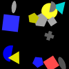
(1)
A square is a gray shape and there is a green triangle.
Exactly a third of the pentagons is a blue shape or at least two pentagons are blue shapes.
There is a yellow circle and less than two thirds of the pentagons are gray shapes.
A cross is darker than a gray pentagon and less than all shapes but one are pentagons.
There is a yellow ellipse and a square is darker than a gray cross.
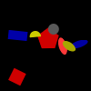
(2)
A yellow shape is a pentagon or there is a red triangle.
There is a blue rectangle or at least all pentagons are red pentagons.
A circle is closer to a red pentagon than a rectangle and there is a gray circle.
There is a yellow pentagon or more than no red shape is a red triangle.
More than zero shapes are gray ellipses and a red square is farther from a gray circle than a yellow ellipse.

(3)
A gray semicircle is in front of a semicircle or less than a third of the magenta shapes is a magenta triangle.
There is a semicircle and a red ellipse is to the right of a square.
A magenta triangle is behind a cross or a red shape is a pentagon.
A gray cross is closer to a cyan shape than a yellow square and exactly two thirds of the red shapes are red triangles.
A cross is a cyan shape or exactly no red shape is a red triangle.
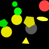
(4)
There is a green rectangle or a pentagon is darker than a semicircle.
There is a pentagon and a yellow shape is a yellow circle.
Not zero shapes are circles and a green circle is farther from a yellow shape than a red circle.
A green shape is a cross or a cyan shape is to the left of a green shape.
At most four gray shapes are circles or a circle is closer to a circle than a yellow triangle.
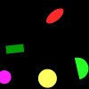
(5)
A red semicircle is smaller than a red shape and a semicircle is above a green pentagon.
A red shape is a cross or there is a red semicircle.
A red shape is smaller than a red semicircle and there is a circle.
A red ellipse is closer to a green pentagon than a cyan ellipse or a semicircle is a cyan shape.
A pentagon is a red shape or an ellipse is a yellow ellipse.
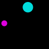
(6)
A gray rectangle is lighter than a gray rectangle and at most all gray shapes but three are ellipses.
There is a gray rectangle and there is a gray pentagon.
A red rectangle is to the right of a cyan circle and there is a cyan triangle.
There is an ellipse and there is a gray shape.
A gray shape is a circle and there is a triangle.
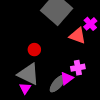
(7)
Exactly two squares are gray shapes or a magenta triangle is smaller than a red shape.
There is a magenta cross and there is a gray shape.
A gray triangle is closer to a magenta triangle than a gray ellipse and a circle is above an ellipse.
There is a gray square and a magenta shape is farther from a square than a cross.
There is a triangle and a gray triangle is bigger than a red shape.
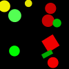
(8)
There is a red shape and there is a cyan cross.
There is a pentagon and there is a green shape.
A gray shape is a square or a magenta shape is a triangle.
There is a yellow semicircle or there is a red cross.
There is a square and a semicircle is a green shape.
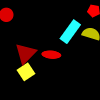
(9)
There is a blue ellipse or there is a magenta shape.
Less than a quarter of the red shapes is a red ellipse or there is a yellow shape.
There is a red ellipse or a yellow triangle is farther from an ellipse than a yellow shape.
A yellow semicircle is to the right of a yellow shape and less than two thirds of the pentagons are red shapes.
A circle is a cyan shape or there is a red circle.

(10)
There is a cross or exactly no cyan shape is a square.
A gray shape is bigger than a red shape and there is a pentagon.
There is a gray ellipse or at most a third of the green shapes is an ellipse.
An ellipse is in front of a cyan square and there is a green ellipse.
A shape is a semicircle or a magenta shape is closer to a green ellipse than a cyan ellipse.
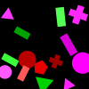
(11)
There is a gray ellipse and a triangle is a green shape.
A yellow cross is to the left of a cross and a semicircle is to the left of a circle.
There is a red circle and a blue shape is a cross.
A triangle is a cyan shape and a green circle is behind a yellow pentagon.
A gray cross is to the right of a triangle or a yellow shape is bigger than a green shape.
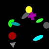
(12)
At least four rectangles are cyan shapes or a cyan semicircle is darker than a rectangle.
A rectangle is to the left of a gray semicircle and more than a third of the rectangles is a cyan shape.
A rectangle is a magenta rectangle or there is a square.
Less than a third of the semicircles is a blue shape or there is a yellow shape.
Less than one rectangle is a cyan rectangle or a triangle is a green triangle.
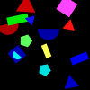
(13)
There is a red triangle or there is a triangle.
A cyan shape is in front of a magenta triangle or more than one rectangle is a yellow shape.
There is a blue shape or a triangle is a gray shape.
A rectangle is a cyan shape and a rectangle is bigger than a red shape.
At most three quarters of the triangles are magenta shapes or at least a quarter of the rectangles is a gray shape.
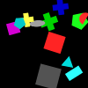
(14)
A green shape is a square and a cyan pentagon is to the left of a magenta shape.
A magenta square is behind a cyan shape or a rectangle is below a cyan triangle.
There is an ellipse and there is a green cross.
At most zero yellow shapes are crosses and a cyan shape is a rectangle.
A magenta shape is a square or not no red shape is a red square.
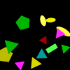
(15)
A cyan ellipse is farther from a magenta ellipse than a blue circle or a magenta square is to the right of an ellipse.
A circle is a green shape or there is a green shape.
There is a gray shape or less than a third of the cyan shapes is an ellipse.
There is an ellipse and a shape is a magenta shape.
There is a blue shape and a magenta shape is bigger than a cyan shape.
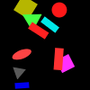
(16)
There is a square and a magenta square is farther from a green shape than a green semicircle.
A yellow shape is closer to a green semicircle than a square and a triangle is darker than a green semicircle.
More than a quarter of the squares is a magenta shape and there is a green shape.
A semicircle is above a magenta square and at least three quarters of the squares are magenta shapes.
Not zero circles are gray shapes or a green shape is an ellipse.
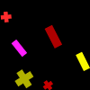
(17)
A gray shape is smaller than a yellow shape or there is a blue shape.
There is a red shape or at most five shapes are magenta shapes.
There is an ellipse and a gray shape is a gray circle.
Not all magenta shapes but two are circles and there is a gray triangle.
A magenta shape is a triangle or less than two gray shapes are triangles.
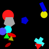
(18)
A green semicircle is smaller than a magenta shape or not no magenta shape is a semicircle.
There is a magenta cross or at least four semicircles are green shapes.
A semicircle is a magenta shape and there is a magenta semicircle.
Exactly three quarters of the semicircles are green shapes and at most three quarters of the semicircles are magenta shapes.
A green shape is a green semicircle and more than three quarters of the magenta shapes are semicircles.
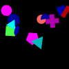
(19)
A cyan triangle is smaller than a cyan shape and there is a magenta circle.
There is a blue shape and a circle is a blue shape.
A yellow shape is smaller than a magenta circle and a triangle is below a blue square.
A cyan shape is a triangle and a magenta shape is below a blue square.
There is a cyan ellipse or a circle is in front of a red circle.
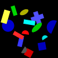
(20)
A rectangle is a green rectangle and there is a cyan rectangle.
Exactly a quarter of the shapes is a red shape or a cross is darker than a blue cross.
A cyan shape is a pentagon or a green shape is bigger than a yellow shape.
There is a green semicircle or there is a yellow semicircle.
Not three cyan shapes are rectangles or exactly zero red shapes are circles.
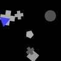
(21)
Less than all gray shapes but three are pentagons and at most three squares are gray shapes.
A circle is a blue shape and less than four gray shapes are circles.
A gray shape is a pentagon and not all gray shapes but one are pentagons.
Less than two thirds of the gray shapes are circles and not a third of the shapes is a gray shape.
At least all shapes but one are gray shapes or there is a blue triangle.
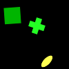
(22)
A green shape is above a yellow shape and a cross is lighter than a square.
Less than all shapes but two are crosses or more than two green shapes are crosses.
An ellipse is a yellow shape and an ellipse is a yellow shape.
A square is above an ellipse and there is a green cross.
A green shape is an ellipse or there is a semicircle.
(23)
A gray shape is a pentagon or there is a cyan shape.
A gray shape is a pentagon and a shape is a semicircle.
There is a gray cross or a shape is a circle.
There is a gray shape and there is a magenta shape.
A gray shape is a semicircle or at least all green shapes but zero are pentagons.
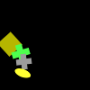
(24)
There is a cyan shape and there is a gray semicircle.
A blue semicircle is to the right of a pentagon and not four magenta shapes are pentagons.
There is a blue cross or more than three blue shapes are pentagons.
There is a magenta triangle and exactly two pentagons are magenta shapes.
A yellow shape is a pentagon or a blue pentagon is to the right of a yellow circle.
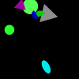
(25)
Less than all green shapes but two are circles or a semicircle is behind a blue semicircle.
There is a magenta ellipse or there is a rectangle.
A magenta shape is a magenta circle and a green shape is a green circle.
There is a cross or a green shape is a triangle.
A cyan ellipse is closer to a blue semicircle than a green circle or not one triangle is a magenta shape.
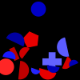
(26)
More than half the shapes are semicircles and a red circle is to the right of a blue shape.
A semicircle is a blue shape or a circle is a cyan circle.
A red shape is closer to a yellow shape than a blue cross or exactly a quarter of the blue shapes is a blue semicircle.
Exactly zero semicircles are red semicircles and a red shape is a semicircle.
Exactly one semicircle is a red shape or more than a third of the red shapes is a pentagon.
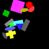
(27)
A green circle is to the left of a magenta shape or more than four shapes are magenta ellipses.
More than no shape is a green cross or a circle is a magenta shape.
A magenta shape is a circle or there is a green ellipse.
There is a green circle and an ellipse is a magenta shape.
There is a green circle and there is a green circle.
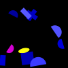
(28)
A blue semicircle is behind a magenta semicircle or a cross is in front of a blue shape.
A magenta shape is closer to a blue semicircle than a magenta shape and a blue semicircle is bigger than a magenta shape.
There is a yellow square and there is a blue rectangle.
Exactly half the blue shapes are blue semicircles and there is a magenta rectangle.
Not zero blue shapes are blue triangles and a red shape is a square.
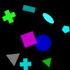
(29)
Not no triangle is a blue shape and a circle is above a green circle.
A blue shape is a blue circle and a cyan shape is an ellipse.
A cyan pentagon is to the left of a rectangle and there is a blue shape.
A square is a magenta square and a green shape is a green cross.
A red cross is below a blue circle and at least two squares are cyan shapes.
(30)
A pentagon is a yellow pentagon and there is a gray pentagon.
A cyan ellipse is to the right of a gray pentagon and there is a gray semicircle.
There is a gray pentagon and a cyan shape is a pentagon.
There is a gray semicircle or there is a circle.
A gray shape is a semicircle or a semicircle is farther from a pentagon than a cyan semicircle.
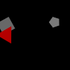
(31)
There is a red shape and at least all blue shapes are crosses.
There is a blue cross or there is a yellow ellipse.
There is a pentagon or there is a blue square.
A gray shape is bigger than a magenta shape and a shape is a yellow rectangle.
A pentagon is darker than a yellow circle or a cross is a green shape.
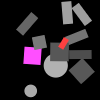
(32)
More than four rectangles are gray shapes or more than two thirds of the gray shapes are gray squares.
A rectangle is a red shape and more than four gray shapes are rectangles.
More than half the squares are blue squares or there is a gray semicircle.
More than half the gray shapes are squares or a magenta shape is smaller than a gray rectangle.
Not five gray shapes are gray circles or at least five magenta shapes are rectangles.
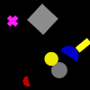
(33)
A red circle is farther from a red semicircle than a triangle and a semicircle is a green shape.
There is a blue triangle or at most half the squares are gray shapes.
Less than all green shapes but one are circles or more than all red shapes but one are circles.
There is a yellow ellipse and a gray square is lighter than an ellipse.
At least a quarter of the circles is a green shape or a gray shape is a square.
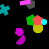
(34)
A red shape is lighter than a rectangle and a pentagon is behind a yellow rectangle.
More than half the shapes are gray pentagons or there is a triangle.
There is a green circle and a green shape is a circle.
There is a red rectangle and an ellipse is a red shape.
A pentagon is in front of a yellow ellipse or at least three quarters of the pentagons are red shapes.
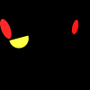
(35)
At most zero red shapes are triangles or a red shape is farther from a green shape than a cyan square.
A cyan rectangle is farther from a magenta triangle than a green square or there is a gray shape.
At most a third of the triangles is a red shape or exactly three green shapes are rectangles.
At least all red shapes are squares and a green rectangle is below a red shape.
Less than a quarter of the rectangles is a cyan shape and there is a magenta triangle.
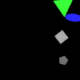
(36)
Less than all gray shapes but one are pentagons or a pentagon is a gray shape.
There is an ellipse and a gray pentagon is darker than a pentagon.
A shape is a triangle and a red shape is a square.
More than four gray shapes are pentagons and there is a blue ellipse.
At most five squares are gray shapes or a triangle is a green shape.
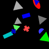
(37)
A cyan shape is above a blue cross or there is a yellow shape.
There is a triangle and exactly no red shape is a red ellipse.
Exactly all blue shapes but three are rectangles and exactly all triangles but one are blue shapes.
There is a triangle or a red shape is an ellipse.
Exactly half the triangles are cyan shapes or an ellipse is farther from a cyan rectangle than a blue shape.
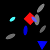
(38)
A gray shape is behind a cyan ellipse and a gray shape is an ellipse.
A red shape is behind a blue triangle or a gray shape is an ellipse.
A shape is an ellipse and there is an ellipse.
An ellipse is a gray shape and at least three quarters of the triangles are blue shapes.
There is a blue ellipse and there is a cyan circle.
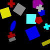
(39)
Not half the cyan shapes are cyan triangles or at least three quarters of the red shapes are ellipses.
There is a gray shape and there is a green shape.
A semicircle is to the left of a gray shape and a red shape is farther from a cyan triangle than a magenta semicircle.
There is a gray shape and a rectangle is a cyan shape.
A cyan rectangle is lighter than a triangle or a cyan triangle is to the right of a gray rectangle.
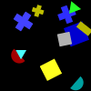
(40)
A blue square is smaller than a yellow shape or there is a cyan cross.
A shape is a triangle or less than all squares but two are gray shapes.
Not all squares but three are gray squares and a cyan shape is a circle.
There is a cyan ellipse or there is an ellipse.
Less than three triangles are green shapes or more than one blue shape is a cross.
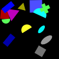
(41)
There is a red shape and a cyan shape is smaller than a gray shape.
A rectangle is farther from a cyan ellipse than a semicircle or there is a magenta square.
Less than one gray shape is an ellipse and there is a blue rectangle.
A yellow semicircle is closer to a magenta shape than a cyan square or a blue rectangle is behind a blue square.
Not three triangles are yellow shapes and more than no ellipse is a gray shape.
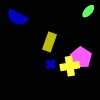
(42)
There is a red shape or a magenta pentagon is below a yellow cross.
A rectangle is to the left of a green ellipse and there is a yellow shape.
More than four semicircles are magenta shapes or there is a yellow ellipse.
A yellow ellipse is closer to a blue cross than a blue shape or there is a magenta cross.
At least four rectangles are yellow shapes or a cross is a magenta shape.
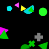
(43)
A green shape is in front of a red square or a red shape is below an ellipse.
There is a triangle or a red square is in front of a rectangle.
A green shape is an ellipse and a blue ellipse is farther from a semicircle than an ellipse.
There is a gray semicircle or less than all shapes but two are rectangles.
There is a triangle or there is a cyan shape.
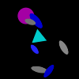
(44)
There is a square or more than three shapes are crosses.
An ellipse is below an ellipse and a blue ellipse is below a gray ellipse.
A triangle is below a magenta circle or not all ellipses but two are blue shapes.
A triangle is closer to a cyan shape than an ellipse and there is an ellipse.
A triangle is a gray shape or there is a square.
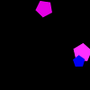
(45)
Not a third of the cyan shapes is a rectangle and a blue shape is a semicircle.
There is a semicircle and exactly all ellipses but zero are cyan shapes.
A semicircle is a blue shape or not all cyan shapes are semicircles.
A red ellipse is farther from a blue semicircle than a yellow triangle and not zero semicircles are cyan semicircles.
Exactly all ellipses but zero are cyan shapes or there is a cyan shape.
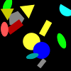
(46)
A blue shape is a square and there is a gray shape.
At least all triangles are blue shapes and there is a blue triangle.
There is a triangle and there is a triangle.
There is a gray triangle or there is a blue semicircle.
There is a blue shape and there is a blue shape.
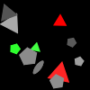
(47)
A red triangle is behind a pentagon and there is a gray shape.
A pentagon is to the right of a gray pentagon and exactly zero green shapes are green ellipses.
Not all pentagons but one are gray pentagons or there is a semicircle.
Exactly all triangles but three are red shapes and there is a gray pentagon.
A gray triangle is below a green pentagon or a red pentagon is above a red triangle.
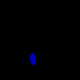
(48)
An ellipse is a blue shape and a blue shape is an ellipse.
There is a blue ellipse or an ellipse is a red shape.
An ellipse is a blue ellipse and an ellipse is a blue shape.
There is a rectangle or there is a gray ellipse.
There is a blue shape or an ellipse is a cyan ellipse.
(49)
A magenta shape is smaller than a blue shape and a magenta shape is an ellipse.
There is a magenta ellipse and not all magenta shapes but two are ellipses.
There is a red shape and there is a yellow semicircle.
There is a yellow pentagon or there is a green shape.
A gray shape is to the right of a semicircle or a magenta ellipse is below a yellow ellipse.
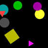
(50)
A yellow square is above a gray shape or exactly zero shapes are circles.
There is a circle and a green shape is bigger than a yellow shape.
A circle is a gray shape and a square is a yellow square.
A gray circle is in front of a yellow shape and a square is a green shape.
At least four magenta shapes are magenta triangles or there is a magenta square.
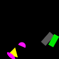
(51)
A gray semicircle is below a magenta shape or a rectangle is a gray shape.
There is a gray rectangle and there is a yellow ellipse.
A rectangle is a gray shape and there is a gray ellipse.
A magenta shape is farther from a rectangle than a gray shape and a triangle is a blue shape.
A magenta shape is a rectangle and a shape is a square.
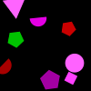
(52)
There is a cyan circle or exactly three blue shapes are semicircles.
There is a blue semicircle and a square is to the left of a blue semicircle.
A yellow circle is closer to a square than a rectangle and at most zero red shapes are pentagons.
There is a semicircle and a square is a red shape.
A semicircle is darker than a cyan rectangle and a cyan shape is smaller than a cyan shape.
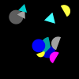
(53)
A semicircle is a yellow shape and a blue shape is darker than a circle.
A magenta shape is a semicircle and a yellow shape is below a circle.
Less than two gray shapes are triangles or there is a circle.
Less than three triangles are gray shapes or at least three cyan shapes are semicircles.
At least four gray shapes are semicircles or there is a cyan semicircle.
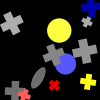
(54)
More than four crosses are gray crosses and a yellow shape is in front of a gray cross.
A gray shape is a gray cross and at most two red shapes are crosses.
A gray cross is to the left of a circle and there is a red cross.
At least all crosses are yellow shapes or there is a square.
A yellow shape is a circle and there is a square.

(55)
A yellow shape is smaller than a blue shape and a yellow cross is below a circle.
There is an ellipse and there is a cross.
Less than three quarters of the crosses are green shapes or more than one blue shape is a triangle.
A cross is a blue shape or exactly all circles but two are red shapes.
There is a triangle and a shape is a red circle.
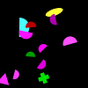
(56)
A green shape is to the left of a magenta rectangle or exactly no semicircle is a magenta shape.
Exactly zero triangles are magenta triangles and a yellow square is in front of a semicircle.
There is an ellipse or a circle is a red circle.
A magenta square is to the left of a magenta triangle and not two shapes are triangles.
More than all triangles but three are yellow shapes or a shape is a magenta shape.
(57)
A rectangle is closer to a green circle than a pentagon or there is a green cross.
A green shape is a pentagon and a red square is bigger than a cyan shape.
A cyan rectangle is above a square or at least all gray shapes but zero are semicircles.
Not all shapes but one are crosses and a green circle is darker than an ellipse.
A gray shape is farther from a red square than a semicircle and a circle is a red shape.
(58)
At least three ellipses are red shapes or an ellipse is darker than a red rectangle.
There is a semicircle or a red ellipse is closer to a yellow cross than a gray shape.
Not no cross is a gray cross and a semicircle is lighter than an ellipse.
There is a green triangle or there is a green rectangle.
A red triangle is darker than a rectangle or there is a blue shape.
(59)
A red cross is lighter than a semicircle or a red ellipse is to the right of a red square.
There is a blue rectangle or a green shape is to the left of a red square.
Less than all blue shapes but three are rectangles and there is a circle.
There is a magenta square and more than zero shapes are yellow ellipses.
An ellipse is in front of a rectangle or a blue shape is a pentagon.
(60)
A red semicircle is above a yellow semicircle and there is a yellow circle.
A blue shape is behind a yellow shape or at most zero cyan shapes are crosses.
A cyan cross is to the left of a cyan shape and a gray shape is smaller than a yellow circle.
A blue semicircle is below a pentagon or there is a yellow square.
At most two thirds of the gray shapes are squares and not a third of the green shapes is a cross.
(61)
A red shape is to the left of a cyan pentagon or there is a green square.
There is a magenta square or exactly one red shape is an ellipse.
A shape is a circle and a cyan shape is farther from a magenta rectangle than a red shape.
At most all crosses but one are cyan shapes or at least five ellipses are red shapes.
At least three pentagons are cyan shapes or there is a red ellipse.
(62)
At least two gray shapes are gray semicircles or a gray pentagon is behind a cross.
There is a red circle and a magenta shape is a pentagon.
A shape is a pentagon and a gray shape is farther from a green semicircle than a yellow circle.
There is a gray semicircle and a magenta shape is in front of a blue square.
A gray shape is a square and a cross is a gray shape.
(63)
There is a circle and at least five pentagons are yellow shapes.
A cross is a red shape and exactly all semicircles are yellow shapes.
A yellow pentagon is below an ellipse and there is a green semicircle.
There is a cross and at most all yellow shapes but one are yellow semicircles.
A semicircle is to the left of a green shape or a cyan shape is a rectangle.
(64)
There is a triangle and more than a quarter of the green shapes is a triangle.
At most four circles are yellow shapes or a yellow square is in front of a red square.
More than half the pentagons are green pentagons or there is a yellow triangle.
There is a yellow rectangle and more than all green shapes but two are pentagons.
More than four rectangles are yellow shapes and at least half the circles are magenta shapes.
(65)
A green shape is to the right of a blue semicircle and a square is a green shape.
A blue shape is a blue ellipse and there is a square.
There is a green shape and an ellipse is above a yellow shape.
Exactly a quarter of the shapes is an ellipse or there is a gray square.
More than three quarters of the green shapes are semicircles and less than five shapes are ellipses.
(66)
There is a pentagon or more than all cyan shapes but two are semicircles.
There is a magenta shape or a square is in front of a cyan shape.
A green shape is a square or at least two thirds of the semicircles are green shapes.
Exactly all squares but zero are red shapes and not three quarters of the semicircles are red shapes.
There is a cyan circle or there is a green shape.
(67)
There is a red shape or a red triangle is to the right of a cyan shape.
More than two thirds of the triangles are gray shapes or there is a blue triangle.
At least a quarter of the cyan shapes is a cross and there is a blue shape.
A square is a blue shape or at least three blue shapes are squares.
At least a quarter of the triangles is a green triangle and at least no triangle is a gray shape.
(68)
A square is lighter than a rectangle and less than a quarter of the squares is a red shape.
There is a square or not all pentagons but one are green shapes.
There is a gray square and more than no yellow shape is a pentagon.
A shape is a square and a green square is smaller than a green shape.
There is a red square or a green square is closer to a yellow rectangle than a green shape.
(69)
There is a gray shape and a gray shape is a rectangle.
There is a gray pentagon and there is a gray shape.
A gray shape is a pentagon and a pentagon is a gray shape.
There is a gray shape or a pentagon is a yellow shape.
There is a gray ellipse and a gray shape is a square.
(70)
A magenta shape is bigger than a blue shape and a rectangle is a cyan rectangle.
A cyan triangle is below a gray semicircle or there is a gray semicircle.
A rectangle is a cyan shape or less than a quarter of the shapes is a triangle.
A gray triangle is above a cyan triangle and not all crosses but zero are red shapes.
There is a gray shape and a square is a gray shape.
(71)
A magenta cross is closer to a magenta cross than a gray cross and a yellow cross is smaller than a magenta shape.
Exactly all magenta shapes are crosses and there is a blue cross.
There is a magenta cross or exactly half the gray shapes are crosses.
A shape is a magenta shape or there is a cross.
There is a circle or there is a cyan shape.
(72)
A rectangle is farther from a pentagon than a magenta shape and a rectangle is a cyan rectangle.
There is a square and a yellow pentagon is smaller than a green shape.
A magenta shape is farther from a gray shape than a green pentagon and there is a cyan rectangle.
A magenta shape is an ellipse or a blue shape is below a circle.
A circle is a cyan shape and not all rectangles but zero are cyan shapes.
(73)
A cross is a magenta shape or less than all cyan shapes but zero are circles.
Exactly three quarters of the ellipses are gray ellipses or an ellipse is to the left of a circle.
There is a green shape and exactly a quarter of the shapes is a cyan circle.
Less than four blue shapes are ellipses and not three quarters of the cyan shapes are circles.
There is a green shape or there is a blue cross.
(74)
There is a cyan square or not all squares but one are green shapes.
There is a green square and there is a square.
There is a green square and there is a cyan shape.
There is a cyan square and not all squares but zero are cyan shapes.
There is a circle or there is a yellow shape.
(75)
More than three quarters of the shapes are red shapes or not a quarter of the shapes is a blue shape.
Less than a third of the circles is a green shape and there is a red circle.
There is a green pentagon and at least all crosses but two are red shapes.
A magenta shape is a cross and not all magenta shapes but zero are circles.
There is a gray shape or a blue shape is a semicircle.
(76)
There is a cyan square and a cyan rectangle is lighter than a semicircle.
A triangle is a cyan shape or a magenta shape is to the right of a cyan rectangle.
There is a magenta shape and at most half the shapes are cyan rectangles.
Exactly two gray shapes are gray rectangles or a green shape is smaller than a cyan shape.
Exactly zero shapes are cyan crosses and not one rectangle is a green shape.
(77)
There is a cyan cross and a cyan pentagon is to the left of an ellipse.
Not zero pentagons are green pentagons or not a quarter of the cyan shapes is a cyan square.
At most half the cyan shapes are squares and a cyan shape is above a cyan circle.
A square is a yellow shape and a green shape is an ellipse.
A circle is a yellow shape or a cyan shape is a rectangle.
(78)
A yellow pentagon is behind a semicircle or there is a red ellipse.
Exactly three green shapes are crosses or there is a cyan shape.
Exactly no green shape is a semicircle or there is a magenta semicircle.
Exactly all yellow shapes are pentagons and a green shape is a triangle.
A rectangle is a green rectangle and a triangle is closer to a yellow semicircle than a gray shape.
(79)
A magenta shape is a rectangle or a shape is a circle.
A triangle is closer to a magenta circle than a circle or at most a third of the red shapes is a rectangle.
A magenta shape is a cross or more than three quarters of the red shapes are crosses.
A gray shape is a rectangle and exactly all yellow shapes are pentagons.
A triangle is a yellow triangle or a circle is smaller than a magenta circle.
(80)
There is a rectangle or exactly five shapes are red semicircles.
A shape is a semicircle and a semicircle is a red shape.
At least half the red shapes are circles or a gray shape is a cross.
Not all red shapes but zero are circles or there is a gray shape.
A red semicircle is to the right of a circle and there is a gray pentagon.
(81)
There is a green square and a magenta triangle is above a cyan square.
There is a cyan rectangle or a gray triangle is above a rectangle.
There is a semicircle or at most five triangles are magenta shapes.
A gray shape is smaller than a magenta shape and there is a cross.
A gray shape is a triangle and a cyan square is below a semicircle.
(82)
A pentagon is in front of a square or a triangle is a green shape.
There is a magenta shape and there is a square.
There is a yellow pentagon and at least three quarters of the shapes are squares.
A shape is a square and there is a square.
There is a blue square and there is a green shape.
(83)
There is a magenta shape or at most zero red shapes are red rectangles.
There is a red pentagon or a circle is above a magenta circle.
A blue shape is a triangle or there is a magenta circle.
A rectangle is darker than a circle and there is a pentagon.
A blue shape is a pentagon and a shape is a magenta pentagon.
(84)
Not all gray shapes but zero are squares or a shape is a gray semicircle.
At most no cyan shape is a pentagon or a cyan shape is a square.
A blue shape is a square or a semicircle is a cyan shape.
A semicircle is a yellow shape or there is a cross.
A cyan shape is a pentagon or a cyan shape is a semicircle.
(85)
There is a cyan pentagon and there is a gray shape.
A yellow shape is closer to an ellipse than a gray semicircle or a shape is a magenta cross.
A yellow rectangle is farther from a cross than a gray semicircle and there is a rectangle.
A yellow shape is above a gray square or there is a blue semicircle.
There is a green rectangle or exactly all crosses but two are green shapes.
(86)
There is a magenta cross or at least two semicircles are gray shapes.
At most five squares are magenta shapes and there is a green shape.
A green shape is a green cross and more than all magenta shapes but two are squares.
There is a circle and more than four magenta shapes are squares.
A rectangle is farther from a green cross than a magenta shape or exactly three crosses are magenta crosses.
(87)
There is a rectangle or at most zero circles are blue circles.
Not zero green shapes are ellipses and a green shape is to the left of a square.
There is a rectangle and a circle is a blue shape.
A red ellipse is above a green ellipse or a shape is a yellow shape.
At least three shapes are green ellipses or less than half the green shapes are ellipses.
(88)
There is an ellipse or a magenta cross is behind a blue square.
At least all circles but one are cyan circles or at most no semicircle is a cyan shape.
A magenta rectangle is to the left of a blue square and there is a gray shape.
There is a blue shape and a yellow cross is in front of a magenta rectangle.
A red semicircle is smaller than a yellow semicircle or a rectangle is a magenta shape.
(89)
At least one shape is a blue rectangle or a blue square is closer to a cross than a square.
Exactly all shapes but two are pentagons and a cyan shape is a triangle.
There is a green shape and a blue semicircle is to the right of a cyan shape.
A semicircle is a yellow semicircle and a blue triangle is above a cross.
There is a cross and a yellow shape is to the left of a blue shape.
(90)
More than all semicircles but one are blue shapes or a blue rectangle is in front of a blue square.
An ellipse is lighter than a semicircle and there is a cyan rectangle.
A cyan shape is smaller than a green shape or a cross is in front of a blue shape.
Less than all shapes but zero are blue shapes or there is a blue shape.
More than a quarter of the rectangles is a cyan shape and a gray shape is smaller than a green shape.
(91)
A cyan shape is a pentagon or a cyan circle is below a cyan square.
A gray shape is a square or a triangle is a cyan shape.
A blue shape is a triangle and there is a cyan pentagon.
Exactly a quarter of the pentagons is a cyan shape and a triangle is a blue shape.
At most no cyan shape is a rectangle or there is a green shape.
(92)
There is a circle or there is a blue shape.
Exactly no pentagon is a green shape or there is a red square.
A pentagon is a magenta shape or there is a red pentagon.
A blue shape is a pentagon and there is a pentagon.
Exactly all pentagons are red shapes and there is a pentagon.
(93)
A triangle is to the left of a magenta triangle and less than a third of the triangles is a gray shape.
At most two thirds of the semicircles are magenta shapes or there is a cyan shape.
At least zero triangles are magenta shapes and there is a magenta shape.
A gray triangle is below a green shape or exactly all gray shapes but one are triangles.
A semicircle is a cyan shape and exactly three quarters of the gray shapes are gray triangles.
(94)
There is a yellow shape or a red shape is to the left of a magenta triangle.
At least two green shapes are crosses and there is a cyan semicircle.
Exactly all circles but one are gray shapes and a cyan triangle is closer to a magenta rectangle than a cyan circle.
A circle is above a green circle and not all green shapes but one are green circles.
Less than a third of the magenta shapes is a rectangle or a circle is in front of a magenta rectangle.
(95)
There is a yellow triangle and a green shape is a semicircle.
There is a green triangle and at least two thirds of the yellow shapes are triangles.
There is a green semicircle or exactly two thirds of the yellow shapes are rectangles.
Not one shape is a yellow shape and a semicircle is a blue shape.
At most a quarter of the semicircles is a blue shape and there is a blue semicircle.
(96)
A triangle is closer to a magenta shape than a blue shape and a green shape is smaller than a red shape.
A blue ellipse is closer to a rectangle than a cross and at most five red shapes are red ellipses.
An ellipse is a blue ellipse or a rectangle is a yellow shape.
At most all ellipses but two are yellow shapes and there is a green ellipse.
There is a yellow shape or there is a blue cross.
(97)
An ellipse is to the left of a cross or a yellow shape is a yellow ellipse.
More than a third of the semicircles is a yellow shape and there is a yellow rectangle.
There is a triangle and at most zero rectangles are yellow shapes.
A cyan cross is closer to a gray ellipse than a cross and a gray shape is a semicircle.
There is a yellow ellipse and at most a third of the semicircles is a yellow shape.
(98)
At least three green shapes are crosses and more than three quarters of the triangles are green shapes.
There is a cross and there is a circle.
A green cross is darker than a green ellipse or a cross is closer to a circle than a red cross.
There is a cross or at least all crosses but two are red shapes.
A pentagon is to the left of a red cross or exactly all green shapes but three are crosses.
(99)
There is a green circle and a green circle is darker than a green triangle.
At least all green shapes are pentagons or there is a green circle.
More than a quarter of the green shapes is an ellipse and at least zero ellipses are green shapes.
A gray shape is an ellipse or a green triangle is behind a red triangle.
Less than three quarters of the green shapes are ellipses and a blue square is below a semicircle.
(100)
A blue shape is below a semicircle or a magenta circle is darker than a pentagon.
Not two thirds of the cyan shapes are rectangles and a rectangle is below a blue shape.
There is a magenta shape and a red shape is a red pentagon.
There is a red triangle or a yellow shape is a triangle.
A rectangle is below a triangle and a magenta triangle is below a yellow rectangle.